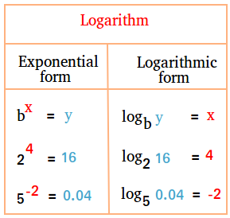

Algebra is the branch of mathematics that studies algebraic structures and the manipulation of statements within those structures. It is a generalization of arithmetic that introduces variables and algebraic operations other than the standard arithmetic operations like addition and multiplication. Elementary algebra is the main form of algebra taught in school and examines mathematical statements using variables for unspecified values. It seeks to determine for which values the statements are true. To do so, it utilizes different methods of transforming equations to isolate variables. Linear algebra is a closely related field investigating variables that appear in several linear equations, so-called systems of linear equations. It tries to discover the values that solve all equations at the same time.

Geometry is a branch of mathematics concerned with properties of space such as the distance, shape, size, and relative position of figures. Originally developed to model the physical world, geometry has applications in almost all sciences, and also in art, architecture, and other activities that are related to graphics. Geometry also has applications in areas of mathematics that are apparently unrelated. For example, methods of algebraic geometry are fundamental in Wiles's proof of Fermat's Last Theorem, a problem that was stated in terms of elementary arithmetic, and remained unsolved for several centuries


In mathematics, the logarithm is the inverse function to exponentiation. That means that the logarithm of a number x to the base b is the exponent to which b must be raised to produce x. For example, since 1000 = 10.10.10, the logarithm base 10 of 1000 is 3, or log10.10.10 (1000) = 3. The logarithm of x to base b is denoted as logb (x), or without parentheses, logb x, or even without the explicit base, log x, when no confusion is possible, or when the base does not matter such as in big O notation. The logarithm base 10 is called the decimal or common logarithm and is commonly used in science and engineering. The binary logarithm uses base 2 and is frequently used in computer science. Logarithms were introduced by John Napier in 1614 as a means of simplifying calculations.[1] They were rapidly adopted by navigators, scientists, engineers, surveyors and others to perform high-accuracy computations more easily. Using logarithm tables, tedious multi-digit multiplication steps can be replaced by table look-ups and simpler addition.
This table is used when we solve mathematics equation with logarithms.

In Mathematics there are some rules of logarithm. Look at the below table to learn those basic laws.